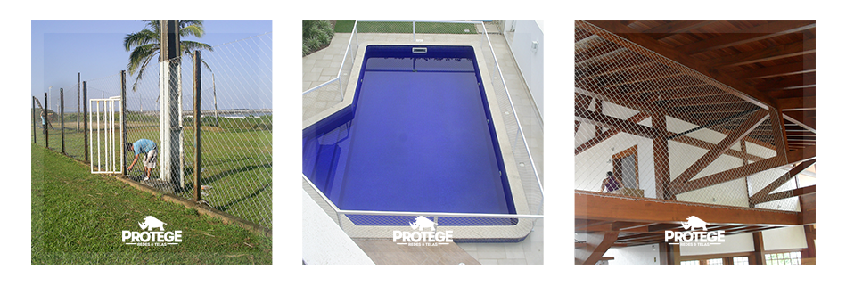

Além de redes para proteção a Protege também trabalha com a instalação de redes para Quadras Esportivas. Assim como nas sacadas e janelas utilizamos a rede de Polietileno 100% Virgem para as instalações em quadras esportivas. Isso garante a maior durabilidade já que o Polietileno possui tratamento contra raios ultravioleta, além de ser impermeável, garantindo que a rede de sua quadra esportiva não sofra ação das intempéries climáticas, durando assim por muito mais tempo.
A Protege, além da instalação da rede de proteção faz a construção das estruturas, em alumínio ou ferro dependendo da sua escolha. Caso você mesmo queira fazer a instalação vendemos a rede separadamente.